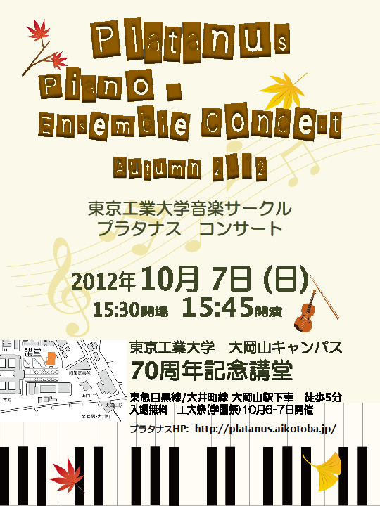

工大祭
次の演奏会は10月7日に開催される工大祭でのコンサートです。

※開場時間が以下の時間に変更になりました。
日時
2012年10月7日 (日)
15:30開場, 15:45開演
場所
東京工業大学 大岡山キャンパス
70周年記念講堂
曲目
ピアノソナタ第23番「熱情」
（L.v.ベートーヴェン）
バラード第1番
（F.ショパン）
ハンガリー狂詩曲第2番
（F.リスト）
カルメン幻想曲
（P.サラサーテ）
ピアノソナタ K.333 変ロ長調
（W.A.モーツァルト）
ほか
プログラム(pdf)
Video streaming by Ustream
過去の演奏会
2012年5月20日 すずかけ祭
2012年3月17日 教会コンサート
2011年10月23日 工大祭
2011年5月15日 すずかけ祭
2011年3月26日 教会コンサート
2010年10月24日 工大祭